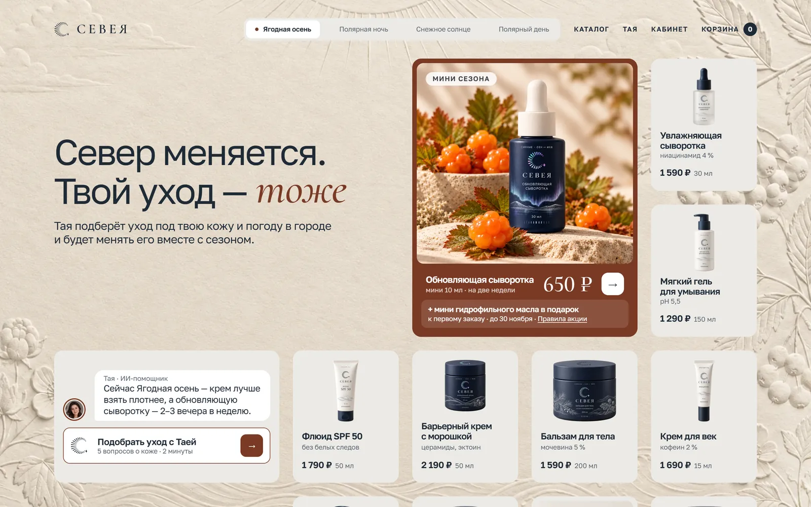
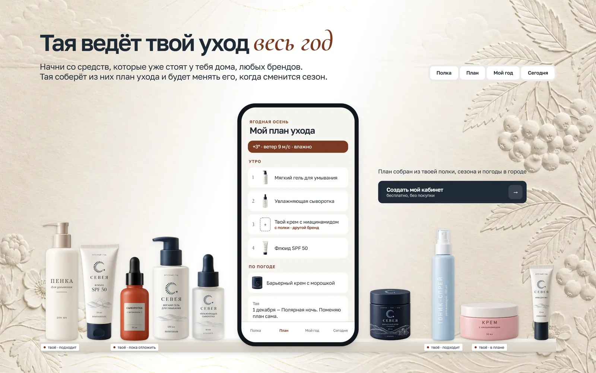
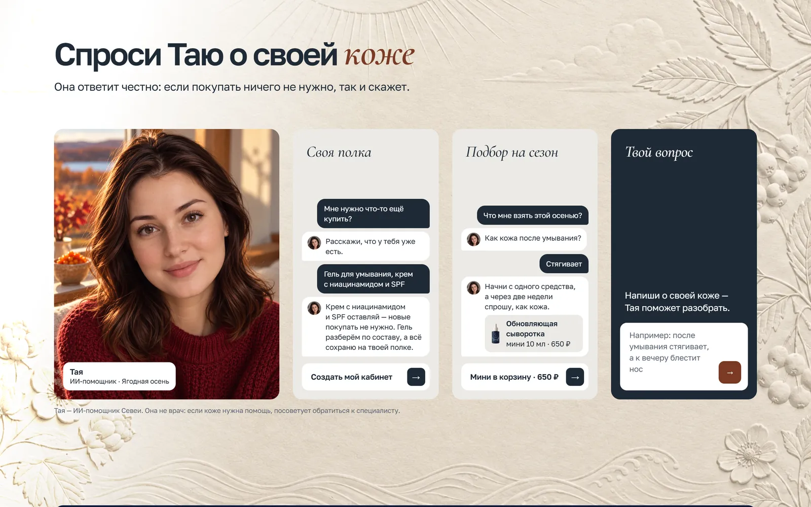
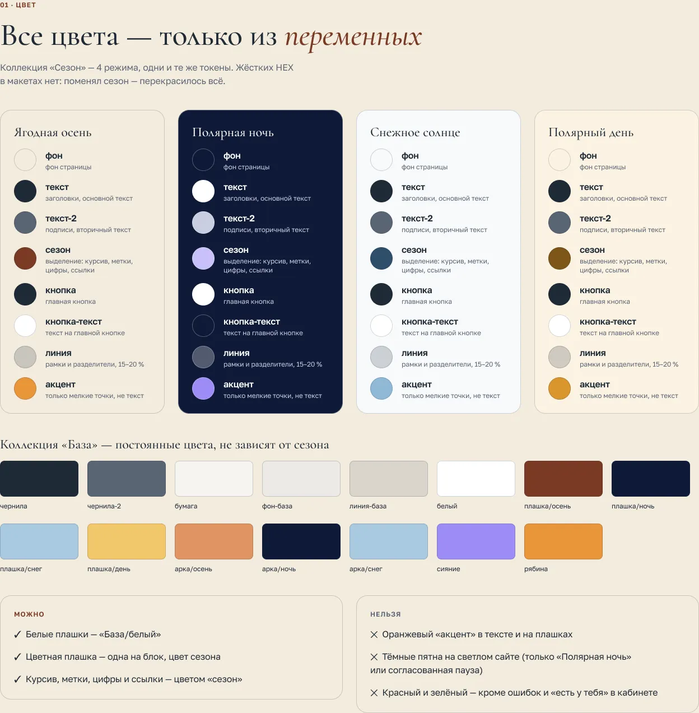
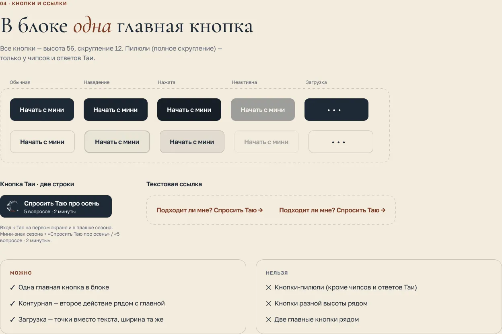

Севея: уход, который ведёт Тая
Концепт северного бренда ухода за кожей. ИИ‑консультант Тая советует одно средство под сезон, собирает план из того, что уже есть дома, и меняет его вместе с сезоном.
ГотовоГлавная, дизайн‑система
РольВсё сама: сценарии, UI
ГлавноеИИ‑консультант в магазине
ИнструментыFigma, HTML, Claude Code

01 / Главная
Уход на весь год
Кабинет — без покупки: Тая соберёт план из того, что уже есть дома.


02 / Дизайн‑система
Сезоны на токенах
Все цвета — переменные Figma: сменился сезон, перекрасился весь сайт.


03 / Что дальше
Проект в работе
Полный кейс появится, когда будут готовы основные страницы.
- Знак, упаковка, характер Таи
- Главная и дизайн‑система сайта
- Каталог и карточка средства
- Чат Таи и кабинет
- Телефон: сначала макет в Figma, потом вёрстка